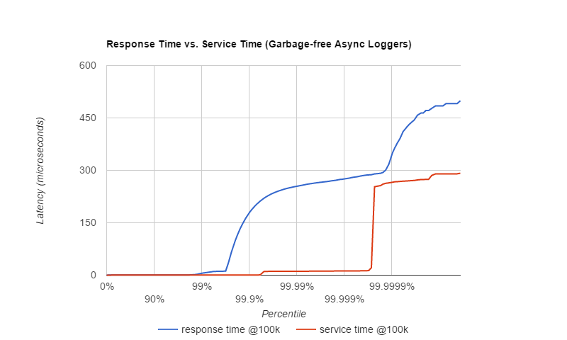
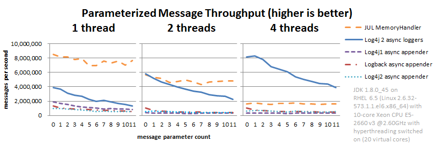
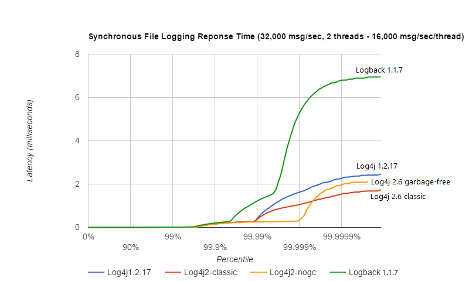
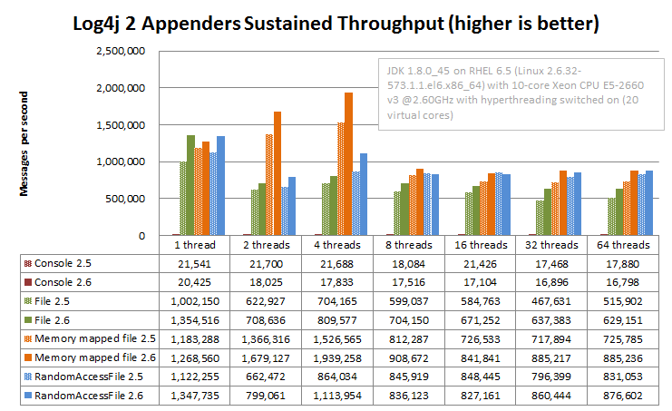

Performance
Apart from functional requirements, an important reason for selecting a logging library is often how well it fulfills non-functional requirements like reliability and performance.
This page compares the performance of a number of logging frameworks (java.util.logging "JUL", Logback, Log4j 1.2 and Log4j 2.6), and documents some performance trade-offs for Log4j 2 functionality.
Benchmarks
Performance can mean different things to different people. Common terms in this context are throughput and latency: Throughput is a measure of capacity and can be expressed in a single number: how many messages can be logged in a certain period of time. Response time latency is how long it takes to log a message. This cannot be expressed in a single number because each measurement has its own response time and we are often most interested in the outliers: how many there were and how large they were.
When evaluating a logging framework’s performance these may be useful questions to ask:
-
What is its peak throughput?
Many systems that react to external events need to log bursts of messages followed by periods of relative quiet. This number is the maximum throughput measured over a short period of time and gives some idea of how well the logging library deals with bursts. For systems that need to log a lot at a constant high rate (for example, batch jobs) this is less likely to be a useful measure of performance.
-
What is the maximum sustained throughput?
This is the throughput averaged over a long time. This is a useful measure of the "upper limit" of the capacity of the logging library. It is not recommended that reactive applications actually log at this rate since under this load they will likely experience jitter and large response time spikes.
-
What is its response time behaviour under various loads?
This is the most important question for applications that need to react to external events in a timely manner. Response time is the total amount of time it takes to log a message and is the sum of the service time and wait time. The service time is the time it takes to do the work to log the message. As the workload increases, the service time often varies little: to do X amount of work it always takes X amount of time. The wait time is how long the request had to wait in a queue before being serviced. As the workload increases, wait time often grows to many times the service time.
Why Care About Response Time Latency?
What is often measured and reported as latency is actually service time, and omits that a service time spike adds wait time for many subsequent events. This may present results that are more optimistic than what users experience.
The graph on the right illustrates how much more optimistic service time is than response time. The graph shows response time and service time for the same system under a load of 100,000 messages per second. Out of 24 million measurements, only ~50 are more than 250 microseconds, less than 0.001%. In a service time-only graph this would hardly be visible. However, the depending on the load it will take a while to catch up after a spike.
The response time graph shows that in reality many more events are impacted by these delays than the service time numbers alone would suggest.
To learn more, watch Gil Tene’s eye-opening presentation How NOT to measure latency.

Logging Library Performance Comparison
Asynchronous Logging - Peak Throughput Comparison
Asynchronous logging is useful to deal with bursts of events. How this works is that a minimum amount of work is done by the application thread to capture all required information in a log event, and this log event is then put on a queue for later processing by a background thread. As long as the queue is sized large enough, the application threads should be able to spend very little time on the logging call and return to the business logic very quickly.
It turns out that the choice of queue is extremely important for peak throughput. Log4j 2’s Async Loggers use a lock-free data structure, whereas Logback, Log4j 1.2 and Log4j 2’s Asynchronous Appenders use an ArrayBlockingQueue. With a blocking queue, multi-threaded applications often experience lock contention when trying to enqueue the log event.
The graph below illustrates the difference a lock-free data structure can make to throughput in multi-threaded scenarios. Log4j 2 scales better with the number of threads: an application with more threads can log more. The other logging libraries suffer from lock contention and total throughput stays constant or drops when more threads are logging. This means that with the other logging libraries, each individual thread will be able to log less.
Bear in mind that this is peak throughput: Log4j 2’s Async Loggers give better throughput up to a point, but once the queue is full, the appender thread needs to wait until a slot becomes available in the queue, and throughput will drop to the maximum sustained throughput of the underlying appenders at best.

For details, see the Async Loggers manual page.
Asynchronous Logging Response Time
Response time behaviour varies a lot with the workload and the number of threads that log concurrently. The Async Loggers manual page and the garbage-free logging manual page provide some graphs showing response time behaviour under various loads.
This section shows another graph showing response time latency behaviour under a modest total workload of 64,000 messages per second, with 4 threads logging concurrently. At this load and on this hardware/OS/JVM configuration, lock contention and context switches play less of a role and the pauses are mostly caused by minor garbage collections. Garbage collection pause duration and frequency can vary a lot: when testing the Log4j 1.2.17 Async Appender a minor GC pause of 7 milliseconds occurred while the Log4j 2 Async Appender test only saw a GC pause of a little over 2 milliseconds. This does not necessarily mean that one is better than the other.
Generally, garbage-free async loggers had the best response time behaviour in all configurations we tested.

The above result was obtained with the ResponseTimeTest class which can be found in the Log4j 2 unit test source directory, running on JDK 1.8.0_45 on RHEL 6.5 (Linux 2.6.32-573.1.1.el6.x86_64) with 10-core Xeon CPU E5-2660 v3 @2.60GHz with hyperthreading switched on (20 virtual cores).
Asynchronous Logging Parameterized Messages
Many logging libraries offer an API for logging parameterized messages. This enables application code to look something like this:
logger.debug("Entry number: {} is {}", i, entry[i]);In the above example, the fully formatted message text is not created unless the DEBUG level is enabled for the logger. Without this API, you would need three lines of code to accomplish the same:
if (logger.isDebugEnabled()) {
logger.debug("Entry number: " + i + " is " + entry[i].toString());
}If the DEBUG level is enabled, then at some point the message needs to be formatted. When logging asynchronously, the message parameters may be changed by the application thread before the background thread had a chance to log the message. This would show the wrong values in the log file. To prevent this, Log4j 2, Log4j 1.2 and Logback format the message text in the application thread before passing off the log event to the background thread.
This is the safe thing to do, but the formatting has a performance cost. The graph below compares the throughput of logging messages with parameters using various logging libraries. These are all asynchronous logging calls, so these numbers do not include the cost of disk I/O and represent peak throughput.
JUL (java.util.logging) does not have a built-in asynchronous Handler.
MemoryHandler
is the nearest thing available so we included it here. MemoryHandler
does not do the safe thing of taking a snapshot of the current
parameter state (it just keeps a reference to the original parameter
objects), and as a result it is very fast when single-threaded. However,
when more application threads are logging concurrently, the cost of lock
contention outweighs this gain.
In absolute numbers, Log4j 2’s Async Loggers perform well compared to the other logging frameworks, but notice that the message formatting cost increases sharply with the number of parameters. In this area, Log4j 2 still has work to do to improve: we would like to keep this cost more constant.

The results above are for JUL (java.util.logging) 1.8.0_45, Log4j 2.6, Log4j 1.2.17 and Logback 1.1.7, and were obtained with the JMH Java benchmark harness. See the AsyncAppenderLog4j1Benchmark, AsyncAppenderLog4j2Benchmark, AsyncAppenderLogbackBenchmark, AsyncLoggersBenchmark and the MemoryHandlerJULBenchmark source code in the log4j-perf-test module.
Asynchronous Logging with Caller Location Information
Some layouts can show the class, method and line number in the application where the logging call was made. In Log4j 2, examples of such layout options are HTML locationInfo, or one of the patterns %C or $class, %F or %file, %l or %location, %L or %line, %M or %method. In order to provide caller location information, the logging library will take a snapshot of the stack, and walk the stack trace to find the location information.
The graph below shows the performance impact of capturing caller location information when logging asynchronously from a single thread. Our tests show that capturing caller location has a similar impact across all logging libraries, and slows down asynchronous logging by about 30-100x.

The results above are for JUL (java.util.logging) 1.8.0_45, Log4j 2.6, Log4j 1.2.17 and Logback 1.1.7, and were obtained with the JMH Java benchmark harness. See the AsyncAppenderLog4j1LocationBenchmark, AsyncAppenderLog4j2LocationBenchmark, AsyncAppenderLogbackLocationBenchmark, AsyncLoggersLocationBenchmark and the MemoryHandlerJULLocationBenchmark source code in the log4j-perf-test module.
Synchronous File Logging - Sustained Throughput Comparison
This section discusses the maximum sustained throughput of logging to a file. In any system, the maximum sustained throughput is determined by its slowest component. In the case of logging, this is the appender, where the message formatting and disk I/O takes place. For this reason we will look at simple synchronous logging to a file, without queues or background threads.
The graph below compares Log4j 2.6’s RandomAccessFile appender to the respective File appenders of Log4j 1.2.17, Logback 1.1.7 and Java util logging (JUL) on Oracle Java 1.8.0_45. ImmediateFlush was set to false for all loggers that support this. The JUL results are for the XMLFormatter (which in our measurements was about twice as fast as the SimpleFormatter).
Log4j 2’s sustained throughput drops a little when more threads are logging simultaneously, but its fine-grained locking pays off and throughput stays relatively high. The other logging frameworks' throughput drops dramatically in multi-threaded applications: Log4j 1.2 has 1/4th of its single-threaded capacity, Logback has 1/10th of its single-threaded capacity, and JUL steadily drops from 1/4th to 1/10th of its single-threaded throughput as more threads are added.

The synchronous logging throughput results above are obtained with the JMH Java benchmark harness. See the FileAppenderBenchmark source code in the log4j-perf-test module.
Synchronous File Logging - Response Time Comparison
Response time for synchronous file logging varies a lot with the workload and the number of threads. Below is a sample for a workload of 32,000 events per second, with 2 threads logging 16,000 events per second each.

The above result was obtained with the ResponseTimeTest class which can be found in the Log4j 2 unit test source directory, running on JDK 1.8.0_45 on RHEL 6.5 (Linux 2.6.32-573.1.1.el6.x86_64) with 10-core Xeon CPU E5-2660 v3 @2.60GHz with hyperthreading switched on (20 virtual cores).
Filtering by Level
The most basic filtering a logging framework provides is filtering by log level. When logging is turned off entirely or just for a set of Levels, the cost of a log request consists of a number of method invocations plus an integer comparison. Unlike Log4j, Log4j 2 Loggers don’t "walk a hierarchy". Loggers point directly to the Logger configuration that best matches the Logger’s name. This incurs extra overhead when the Logger is first created but reduces the overhead every time the Logger is used.
Advanced Filtering
Both Logback and Log4j 2 support advanced filtering. Logback calls them TurboFilters while Log4j 2 has a single Filter object. Advanced filtering provides the capability to filter LogEvents using more than just the Level before the events are passed to Appenders. However, this flexibility does come with some cost. Since multi-threading can also have an impact on the performance of advanced filtering, the chart below shows the difference in performance of filtering based on a Marker or a Marker’s parent.
The "Simple Marker" comparison checks to see if a Marker that has no references to other markers matches the requested Marker. The "Parent Marker" comparison checks to see if a Marker that does have references to other markers matches the requested Marker.
It appears that coarse-grained synchronization in SLF4J can impact performance in multi-threaded scenarios. See SLF4J-240.

Log4j and Logback also support filtering on a value in the Log4j ThreadContext vs filtering in Logback on a value in the MDC. The graph below shows that the performance difference between Log4j 2 and Logback is small for the ThreadContext filter.

The Filter comparison results above are obtained with the JMH Java benchmark harness. See the MarkerFilterBenchmark and MDCFilterBenchmark in the log4j-perf-test module for details on these benchmarks.
Trade-offs
Which Log4j 2 Appender to Use?
Assuming that you selected Log4j 2 as your logging framework, next you may be interested in learning what the performance trade-offs are for selecting a specific Log4j 2 configuration. For example, there are three appenders for logging to a file: the File, RandomAccessFile and MemoryMappedFile appenders. Which one should you use?
If performance is all you care about, the graphs below show your best choice is either the MemoryMappedFile appender or the RandomAccessFile appender. Some things to bear in mind:
-
MemoryMappedFile appender does not have a rolling variant yet.
-
When the log file size exceeds the MemoryMappedFile’s region length, the file needs to be remapped. This can be a very expensive operation, taking several seconds if the region is large.
-
MemoryMappedFile appender creates a presized file from the beginning and fills it up gradually. This can confuse tools like
tail; many such tools don’t work very well with memory mapped files. -
On Windows, using a tool like
tailon a file created by RandomAccessFile appender can hold a lock on this file which may prevent Log4j from opening the file again when the application is restarted. In a development environment where you expect to restart your application regularly while using tools like tail to view the log file contents, the File appender may be a reasonable trade-off between performance and flexibility. For production environments performance may have higher priority.
The graph below shows sustained throughput for the console and file appenders in Log4j 2.6, and for reference also provides the 2.5 performance.
It turns out that the garbage-free text encoding logic in 2.6 gives these appenders a performance boost compared to Log4j 2.5. It used to be that the RandomAccessFile appender was significantly faster, especially in multi-threaded scenarios, but with the 2.6 release the File appender performance has improved and the performance difference between these two appender is smaller.
Another takeaway is just how much of a performance drag logging to the
console can be. Considering logging to a file and using a tool like
tail to watch the file change in real time.

On Windows, the results are similar but the RandomAccessFile and MemoryMappedFile appenders outperform the plain File appender in multi-threaded scenarios. The absolute numbers are higher on Windows: we don’t know why but it looks like Windows handles lock contention better than Linux.

The Log4j 2 appender comparison results above are obtained with the JMH Java benchmark harness. See the Log4j2AppenderComparisonBenchmark source code in the log4j-perf-test module.